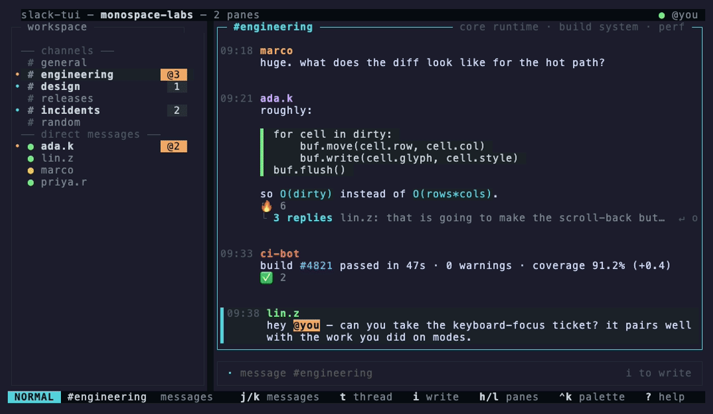

slack-tui▏
A keyboard-first Slack client for your terminal.
Like vim or lazygit — not another Electron window.
▄▁▁▁▁▁▁▁▁▁▁▁▁▁▁▁▁▁▁▁▁▁▁▁▁▁▁▁▁▁▁▁▁▁▁▁▁▁▁▁▁▁▁▁▁▁▁▁▁▁▁▁▁▁▁▁▁▁

- Vim-modal — NORMAL/INSERT,
j/k,gg/G,/to find,ddto delete - Threads, reactions, edits — everything you actually do in Slack
- Fuzzy everything — command palette, workspace search, channel browser
- Lives in the background — live unread, desktop notifications on mentions and DMs
- Follows your desktop theme — on Omarchy, re-theme and the TUI repaints with it
- Your own Slack app — no third party sees your messages
install
# verifies checksums, no Go toolchain needed
curl -fsSL https://raw.githubusercontent.com/kurenn/slack-tui/main/install.sh | sh# or from source
go install github.com/kurenn/slack-tui@latest
Installs to /usr/local/bin, or ~/.local/bin when that isn't
writable. Prebuilt binaries for Linux, macOS and Windows are on
the releases page;
macOS also has brew install kurenn/tap/slack-tui.
connect
slack-tui setupTwo minutes, once. It copies a Slack app manifest to your clipboard, opens the browser, asks for the Client ID, and signs you in. There is no client secret — sign-in uses PKCE, and the token never leaves your machine.
No Slack account handy? Run slack-tui with no setup at all and
you get a mock workspace to play with.
keys
| j / k · gg / G | move · jump to top/bottom |
| Tab · h / l | switch panes |
| Enter · t | open thread |
| i · r | write · reply in thread |
| a · e · dd · y | react · edit · delete · yank |
| / · n / N · s | find in channel · next/prev · search workspace |
| ] · [ | next · previous unread |
| Ctrl-K | command palette |
| , · ? | settings · help |
▄▁▁▁▁▁▁▁▁▁▁▁▁▁▁▁▁▁▁▁▁▁▁▁▁▁▁▁▁▁▁▁▁▁▁▁▁▁▁▁▁▁▁▁▁▁▁▁▁▁▁▁▁▁▁▁▁▁